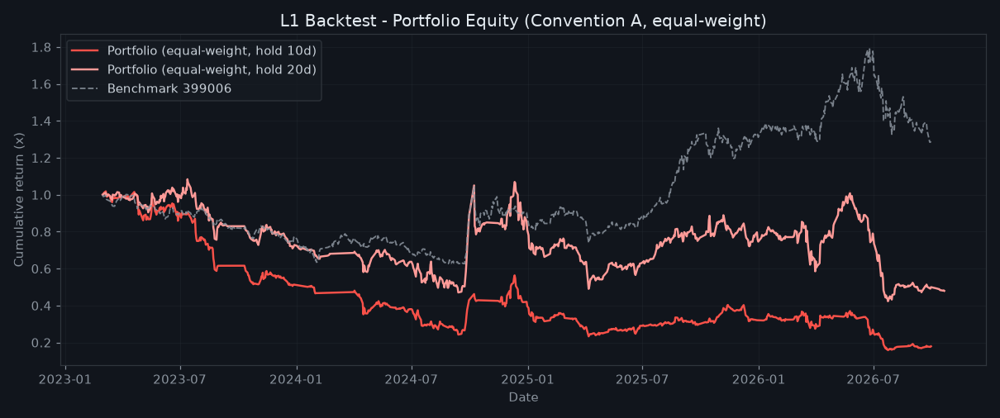
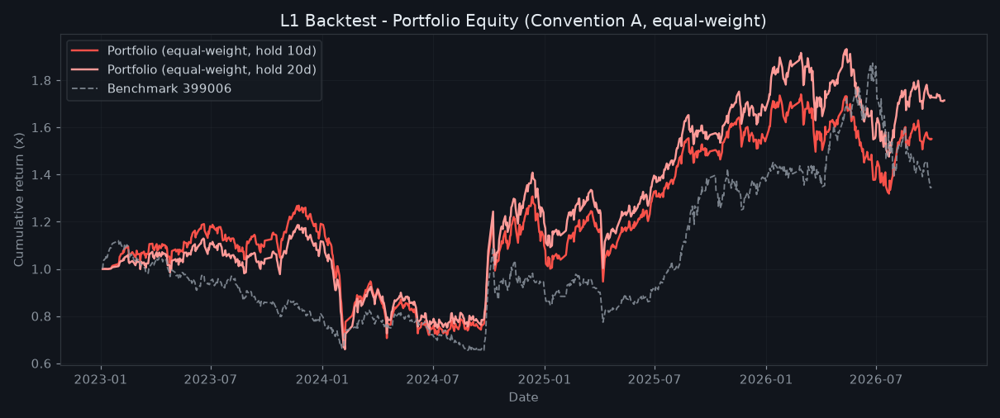
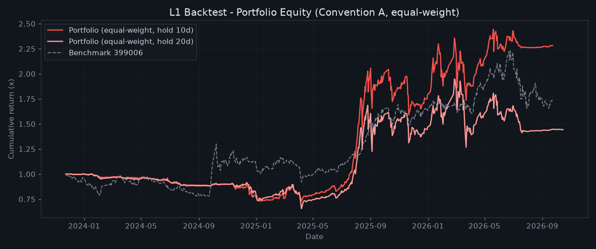
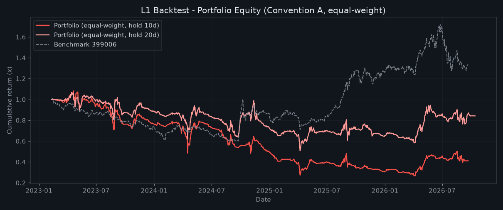
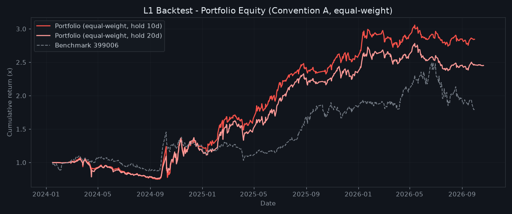

vibe-dashboard 回测报告：威震天 / 盗火线 / 四周新高 / 高欣季度环比 四套选股规则的 L1 历史回测（全市场历史跑批，本页生成）+ 多策略受控回测（backtest.yml 每周五自动更新，内嵌展示最新版）。两类体系相互独立，勿混淆。
本标签内嵌展示 backtest_report.html 的最新版本（自动更新），也可 新窗口打开原页 →
生成时间：2026-10-22 18:02｜数据区间 20230101 ~ 20261021｜股票池：创业板 300/301 + 科创板 688｜价格口径：不复权（与生产同花顺01一致）
2023 年 51 条 2024 年 88 条 2025 年 85 条 2026 年 64 条
| 口径 | N(日) | 样本 | 胜率% | 均值% | 中位% | P10% | P90% | 盈亏比 | 超额%(vs399006) | 组合MDD% |
|---|---|---|---|---|---|---|---|---|---|---|
| A · 信号日收盘买 | 1 | 288 | 38.5 | -0.43 | -0.89 | -4.53 | +4.40 | 1.19 | -0.30 | -82.8 |
| A · 信号日收盘买 | 5 | 288 | 38.9 | -1.08 | -2.32 | -9.41 | +6.60 | 1.13 | -1.01 | -77.0 |
| A · 信号日收盘买 | 10 | 288 | 38.9 | -1.83 | -2.83 | -15.85 | +13.21 | 1.07 | -2.14 | -84.5 |
| A · 信号日收盘买 | 20 | 288 | 41.3 | -0.85 | -2.45 | -20.62 | +16.85 | 1.24 | -2.09 | -60.9 |
| B · 次日开盘买 | 1 | 288 | 42.7 | -0.14 | -0.47 | -4.04 | +4.03 | 1.22 | +0.11 | — |
| B · 次日开盘买 | 5 | 288 | 40.6 | -0.79 | -1.92 | -9.67 | +7.21 | 1.14 | -0.77 | — |
| B · 次日开盘买 | 10 | 288 | 39.2 | -1.55 | -2.81 | -15.47 | +13.20 | 1.12 | -2.07 | — |
| B · 次日开盘买 | 20 | 288 | 41.3 | -0.58 | -1.95 | -20.23 | +17.03 | 1.29 | -2.03 | — |
口径A＝信号日收盘价买入（乐观上界）；口径B＝次日开盘价买入（更接近可执行）。超额＝信号收益 − 创业板指同期收益。
| 分组 | 样本 | 胜率% | 均值% | 盈亏比 |
|---|---|---|---|---|
| T+3 | 31 | 19.4 | -6.82 | 0.67 |
| T+4 | 46 | 41.3 | -1.53 | 1.03 |
| T+5 | 69 | 49.3 | +0.47 | 1.13 |
| T+6 | 68 | 44.1 | -0.18 | 1.22 |
| T+7 | 48 | 27.1 | -4.62 | 0.84 |
| T+8 | 26 | 38.5 | -1.74 | 1.13 |
| 分组 | 样本 | 胜率% | 均值% | 盈亏比 |
|---|---|---|---|---|
| 0.45~0.55 | 139 | 39.6 | -1.56 | 1.09 |
| 0.55~0.65 | 82 | 40.2 | -1.15 | 1.19 |
| 0.65~0.75 | 46 | 39.1 | -2.72 | 0.89 |
| 0.75~0.80 | 21 | 28.6 | -4.37 | 0.81 |
| 分组 | 样本 | 胜率% | 均值% | 盈亏比 |
|---|---|---|---|---|
| 指数在 MA250 上方 | 162 | 40.7 | -1.99 | 0.94 |
| 指数在 MA250 下方 | 126 | 36.5 | -1.64 | 1.26 |

gen_weizhentian.py 逐行复刻（非口述版）：20% 涨停且收盘封板 → 距涨停日 T+3~T+8 → 收盘价在 10 日线上方且跌破涨停价 → MA10/MA25 日环比多头且 MA10≥MA25 → C < MA25×1.08 → 量比 V/V涨停量 ∈ [0.45,0.80] 且换手率 1.5~12% 且 V < MA(V,20)×1.5。
生成时间：2026-10-22 18:02｜数据区间 20230101 ~ 20261021｜股票池：创业板 300/301 + 科创板 688｜价格口径：不复权（与生产同花顺01一致）
2023 年 5837 条 2024 年 6050 条 2025 年 6070 条 2026 年 4270 条
| 口径 | N(日) | 样本 | 胜率% | 均值% | 中位% | P10% | P90% | 盈亏比 | 超额%(vs399006) | 组合MDD% |
|---|---|---|---|---|---|---|---|---|---|---|
| A · 信号日收盘买 | 1 | 22227 | 48.4 | +0.10 | +0.00 | -3.36 | +3.59 | 1.16 | +0.05 | -41.3 |
| A · 信号日收盘买 | 5 | 22227 | 47.2 | +0.39 | -0.30 | -7.49 | +8.47 | 1.29 | +0.13 | -45.6 |
| A · 信号日收盘买 | 10 | 22227 | 48.1 | +0.69 | -0.31 | -10.64 | +12.16 | 1.29 | +0.21 | -44.3 |
| A · 信号日收盘买 | 20 | 22227 | 48.6 | +1.57 | -0.35 | -14.48 | +18.25 | 1.41 | +0.74 | -44.4 |
| B · 次日开盘买 | 1 | 22227 | 49.3 | +0.16 | +0.00 | -3.13 | +3.48 | 1.19 | +0.05 | — |
| B · 次日开盘买 | 5 | 22227 | 47.8 | +0.45 | -0.23 | -7.32 | +8.40 | 1.3 | +0.13 | — |
| B · 次日开盘买 | 10 | 22227 | 48.3 | +0.75 | -0.25 | -10.48 | +12.26 | 1.3 | +0.22 | — |
| B · 次日开盘买 | 20 | 22227 | 48.9 | +1.63 | -0.29 | -14.37 | +18.18 | 1.41 | +0.74 | — |
口径A＝信号日收盘价买入（乐观上界）；口径B＝次日开盘价买入（更接近可执行）。超额＝信号收益 − 创业板指同期收益。
| 分组 | 样本 | 胜率% | 均值% | 盈亏比 |
|---|---|---|---|---|
| < 90 | 438 | 80.8 | +6.77 | 1.98 |
| 90 ~ 95 | 585 | 46.3 | -0.00 | 1.16 |
| 95 ~ 100 | 998 | 45.8 | +1.11 | 1.66 |
| = 100（满分） | 20206 | 47.5 | +0.55 | 1.28 |
| 分组 | 样本 | 胜率% | 均值% | 盈亏比 |
|---|---|---|---|---|
| 20.0~26.8 | 5520 | 52.8 | +1.44 | 1.31 |
| 26.8~33.3 | 5575 | 48.8 | +0.90 | 1.33 |
| 33.3~40.6 | 5550 | 46.1 | +0.37 | 1.29 |
| 40.6~111.8 | 5582 | 44.5 | +0.03 | 1.26 |
| 分组 | 样本 | 胜率% | 均值% | 盈亏比 |
|---|---|---|---|---|
| 指数在 MA250 上方 | 11465 | 50.4 | +0.81 | 1.23 |
| 指数在 MA250 下方 | 10762 | 45.6 | +0.55 | 1.37 |

screen_similar.py 逐行复刻（非口述版）：初筛池：市值 20~120 亿、价≤30、换手>0.8%、非 ST/退市、非涨停；对池中每票按「连板启动前画像」7 维特征（小市值 / 前期弱势 / 低位蓄势 / 量能回升 / 振幅相当 / 已有回撤 / 波动温和）做相似度打分，取当日截面 top25 作为信号。
生成时间：2026-10-22 18:02｜数据区间 20230101 ~ 20261021｜股票池：创业板 300/301 + 科创板 688｜价格口径：不复权（与生产同花顺01一致）
2023 年 7 条 2024 年 534 条 2025 年 3028 条 2026 年 1444 条
| 口径 | N(日) | 样本 | 胜率% | 均值% | 中位% | P10% | P90% | 盈亏比 | 超额%(vs399006) | 组合MDD% |
|---|---|---|---|---|---|---|---|---|---|---|
| A · 信号日收盘买 | 1 | 5013 | 45.6 | +0.24 | -0.28 | -3.48 | +4.37 | 1.44 | +0.10 | -27.0 |
| A · 信号日收盘买 | 5 | 5013 | 48.9 | +0.80 | -0.11 | -7.97 | +9.87 | 1.37 | -0.06 | -29.2 |
| A · 信号日收盘买 | 10 | 5013 | 50.7 | +1.54 | +0.14 | -11.01 | +14.72 | 1.41 | -0.35 | -27.1 |
| A · 信号日收盘买 | 20 | 5013 | 48.0 | +1.83 | -0.58 | -16.09 | +20.97 | 1.46 | -2.33 | -34.9 |
| B · 次日开盘买 | 1 | 5013 | 45.8 | +0.25 | -0.23 | -3.30 | +4.22 | 1.45 | -0.09 | — |
| B · 次日开盘买 | 5 | 5013 | 48.9 | +0.80 | -0.12 | -7.92 | +9.84 | 1.38 | -0.27 | — |
| B · 次日开盘买 | 10 | 5013 | 50.8 | +1.54 | +0.15 | -10.98 | +14.71 | 1.4 | -0.49 | — |
| B · 次日开盘买 | 20 | 5013 | 48.2 | +1.84 | -0.54 | -16.09 | +21.13 | 1.45 | -2.46 | — |
口径A＝信号日收盘价买入（乐观上界）；口径B＝次日开盘价买入（更接近可执行）。超额＝信号收益 − 创业板指同期收益。
| 分组 | 样本 | 胜率% | 均值% | 盈亏比 |
|---|---|---|---|---|
| ≤ -2% | 3255 | 50.2 | +1.38 | 1.37 |
| -2% ~ -1% | 1052 | 50.8 | +1.66 | 1.45 |
| -1% ~ 0% | 706 | 53.0 | +2.10 | 1.58 |
| 分组 | 样本 | 胜率% | 均值% | 盈亏比 |
|---|---|---|---|---|
| 0% ~ 1% | 2173 | 51.0 | +1.58 | 1.41 |
| 1% ~ 2% | 1569 | 53.3 | +2.06 | 1.42 |
| 2% ~ 3.5% | 1271 | 47.0 | +0.82 | 1.38 |
| 分组 | 样本 | 胜率% | 均值% | 盈亏比 |
|---|---|---|---|---|
| 指数在 MA250 上方 | 4653 | 51.3 | +1.75 | 1.44 |
| 指数在 MA250 下方 | 360 | 42.5 | -1.16 | 1.01 |

gen_fourweek_newhigh.py 逐行复刻（非口述版）：近 52 周高 ×0.95（一年高位） → 当日收盘创 4 周新高且突破幅度 ≤3.5%（温和不透支） → 收盘贴近 25 日线（偏离 ±区间） → 近 5 日日均成交额 ≥1 亿（流动性）。趋势 MA25>MA60 仅展示不硬过滤。
生成时间：2026-10-22 18:02｜数据区间 20230101 ~ 20261021｜股票池：创业板 300/301 + 科创板 688｜价格口径：不复权（与生产同花顺01一致）
2023 年 684 条 2024 年 628 条 2025 年 654 条 2026 年 457 条
| 口径 | N(日) | 样本 | 胜率% | 均值% | 中位% | P10% | P90% | 盈亏比 | 超额%(vs399006) | 组合MDD% |
|---|---|---|---|---|---|---|---|---|---|---|
| A · 信号日收盘买 | 1 | 2423 | 45.7 | -0.45 | -0.38 | -6.12 | +5.00 | 0.93 | -0.52 | -95.1 |
| A · 信号日收盘买 | 5 | 2423 | 44.5 | -1.13 | -0.85 | -14.96 | +9.87 | 0.93 | -1.55 | -94.1 |
| A · 信号日收盘买 | 10 | 2423 | 45.2 | -0.48 | -1.03 | -16.18 | +13.28 | 1.1 | -1.43 | -75.5 |
| A · 信号日收盘买 | 20 | 2423 | 44.8 | +0.23 | -1.57 | -18.28 | +18.85 | 1.28 | -1.71 | -52.3 |
| B · 次日开盘买 | 1 | 2423 | 49.2 | +0.16 | -0.09 | -4.84 | +5.38 | 1.14 | -0.02 | — |
| B · 次日开盘买 | 5 | 2423 | 44.7 | -0.58 | -0.76 | -12.36 | +9.84 | 1.06 | -1.04 | — |
| B · 次日开盘买 | 10 | 2423 | 45.9 | +0.05 | -0.82 | -13.91 | +12.97 | 1.19 | -1.06 | — |
| B · 次日开盘买 | 20 | 2423 | 44.6 | +0.76 | -1.51 | -16.74 | +19.49 | 1.41 | -1.39 | — |
口径A＝信号日收盘价买入（乐观上界）；口径B＝次日开盘价买入（更接近可执行）。超额＝信号收益 − 创业板指同期收益。
| 分组 | 样本 | 胜率% | 均值% | 盈亏比 |
|---|---|---|---|---|
| 5~44 | 606 | 36.3 | -3.80 | 0.86 |
| 44~63 | 601 | 43.9 | -1.58 | 0.91 |
| 63~72 | 526 | 50.6 | +0.74 | 1.18 |
| 72~90 | 690 | 49.9 | +2.46 | 1.61 |
| 分组 | 样本 | 胜率% | 均值% | 盈亏比 |
|---|---|---|---|---|
| 10 ~ 50 | 761 | 41.3 | -1.87 | 0.98 |
| 50 ~ 100 | 564 | 43.1 | -1.27 | 1.02 |
| 100 ~ 300 | 672 | 48.1 | +0.47 | 1.2 |
| ≥ 300 | 426 | 50.2 | +1.55 | 1.34 |
| 分组 | 样本 | 胜率% | 均值% | 盈亏比 |
|---|---|---|---|---|
| 0（无技术确认） | 774 | 32.6 | -5.23 | 0.9 |
| 10（满分） | 1649 | 51.1 | +1.75 | 1.48 |
| 分组 | 样本 | 胜率% | 均值% | 盈亏比 |
|---|---|---|---|---|
| 指数在 MA250 上方 | 1093 | 44.4 | -0.71 | 1.1 |
| 指数在 MA250 下方 | 1330 | 45.8 | -0.29 | 1.11 |

_gx_quarter_rank.py 逐行复刻（非口述版）：初筛：季度归母净利环比 10%~5000%、非 ST/退市、非北交所；财务分（90）= 净利同比(30) + 营收同比(20) + 季度环比(15) + ROE(15) + 毛利率(10)；技术分（封顶 10）= 均线多头(最高30) + 近20日趋势(最高20)；每个公告日按财务分取前 30 → 算技术分 → 按总分取前 10。信号日＝公告日后第一个交易日。
生成时间：2026-10-22 18:02｜数据区间 20230101 ~ 20261021｜股票池：创业板 300/301 + 科创板 688｜价格口径：不复权（与生产同花顺01一致）
2024 年 1883 条 2025 年 2999 条 2026 年 927 条
| 口径 | N(日) | 样本 | 胜率% | 均值% | 中位% | P10% | P90% | 盈亏比 | 超额%(vs399006) | 组合MDD% |
|---|---|---|---|---|---|---|---|---|---|---|
| A · 信号日收盘买 | 1 | 5809 | 47.2 | +0.32 | -0.06 | -3.36 | +4.11 | 1.43 | -0.06 | -61.0 |
| A · 信号日收盘买 | 5 | 5809 | 50.3 | +0.73 | +0.08 | -7.18 | +8.21 | 1.31 | -0.34 | -61.4 |
| A · 信号日收盘买 | 10 | 5809 | 54.9 | +1.90 | +0.91 | -8.93 | +12.27 | 1.41 | +0.11 | -37.4 |
| A · 信号日收盘买 | 20 | 5809 | 55.9 | +3.18 | +1.55 | -13.00 | +19.25 | 1.45 | +0.27 | -27.8 |
| B · 次日开盘买 | 1 | 5809 | 47.7 | +0.22 | -0.10 | -3.12 | +3.59 | 1.33 | -0.26 | — |
| B · 次日开盘买 | 5 | 5809 | 50.4 | +0.65 | +0.11 | -7.18 | +8.18 | 1.27 | -0.27 | — |
| B · 次日开盘买 | 10 | 5809 | 55.1 | +1.81 | +0.84 | -9.05 | +11.93 | 1.38 | +0.09 | — |
| B · 次日开盘买 | 20 | 5809 | 55.6 | +3.08 | +1.49 | -13.08 | +18.94 | 1.45 | +0.18 | — |
口径A＝信号日收盘价买入（乐观上界）；口径B＝次日开盘价买入（更接近可执行）。超额＝信号收益 − 创业板指同期收益。
| 分组 | 样本 | 胜率% | 均值% | 盈亏比 |
|---|---|---|---|---|
| 0 ~ 1 | 2830 | 55.0 | +1.80 | 1.42 |
| 1 ~ 2 | 1834 | 55.9 | +2.10 | 1.41 |
| 2 ~ 3 | 1145 | 53.4 | +1.80 | 1.4 |
| 分组 | 样本 | 胜率% | 均值% | 盈亏比 |
|---|---|---|---|---|
| < 5 | 434 | 58.8 | +2.98 | 1.68 |
| 5 ~ 10 | 1772 | 55.9 | +2.00 | 1.44 |
| 10 ~ 15 | 1829 | 55.2 | +2.04 | 1.44 |
| 15 ~ 20 | 1774 | 52.9 | +1.38 | 1.31 |
| 分组 | 样本 | 胜率% | 均值% | 盈亏比 |
|---|---|---|---|---|
| 指数在 MA250 上方 | 4657 | 57.4 | +2.23 | 1.49 |
| 指数在 MA250 下方 | 1152 | 45.1 | +0.54 | 1.37 |

gen_lst.py 逐行复刻（非口述版）：周线口径（日K 按周一起、周五止聚合）：周HH=HHV(H#WEEK,55)、周LL=LLV(L#WEEK,55)、周LST=(周HH+周LL)/2（55 周高低中点＝长期成本中枢）→ 周突破：本周收盘>周LST 且 上周收盘≤上周周LST（首次站上）→ 周溢价：收盘≤周LST×1.03 → 股价<20 元、非 ST/退市、不停牌。
vibe-dashboard · 策略回测中心 · 四策略 L1 回测（新浪/同花顺日K + 东方财富业绩报表 + 本地流水线生成，规则复刻自生产源码）｜多策略回测为仓库既有体系，周五自动更新